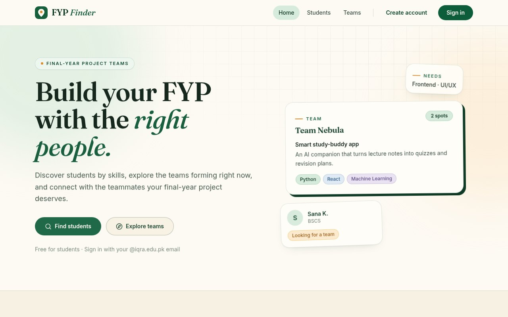
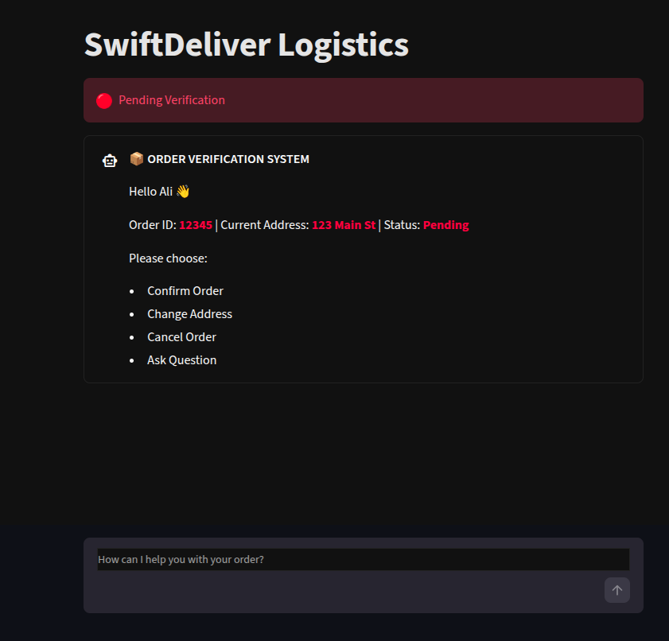
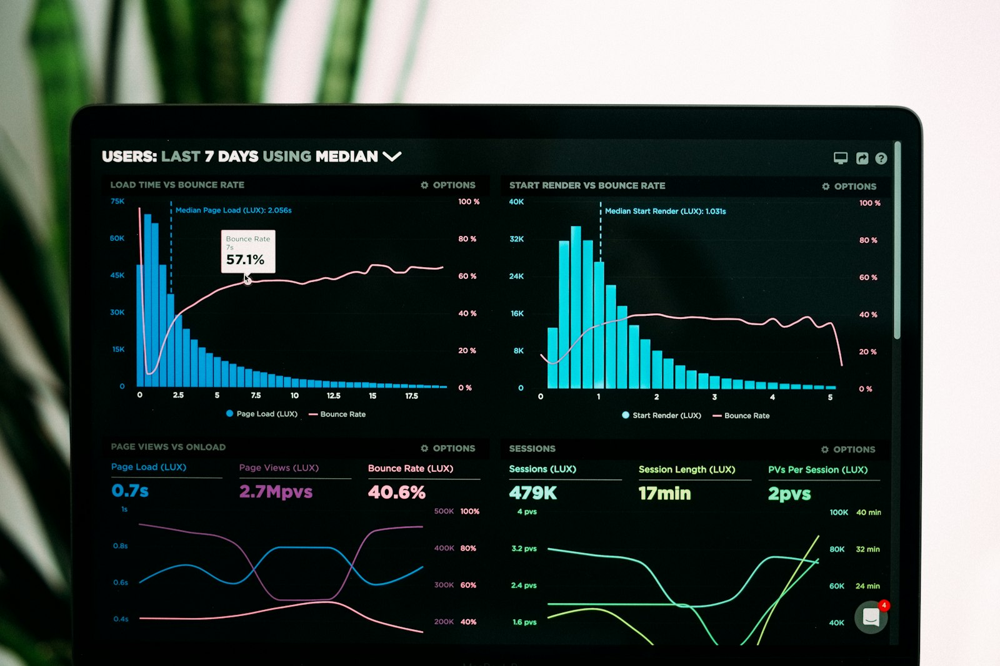

ALI UR REHMAN — PORTFOLIO 2026 作品集
ALI.
BUILDING THINGS THAT WORK.
I’m a Computer Science student who builds things, learns how software works, and turns ideas into working projects — from full-stack platforms and RAG assistants to algorithms you can watch run.
SCROLL01 私について WHO IS ALI
ABOUT
I CARE WHY IT works.
NOT JUST THAT IT runs.
I’m Ali ur Rehman, a Computer Science student who enjoys building things, learning how software works, and turning ideas into working projects. My path runs from algorithms and data structures through full-stack development to machine learning — each layer making the next one make more sense.
Right now I’m building an FYP team-finder platform, experimenting with retrieval-augmented generation and LLM agents, and preparing to contribute to open source with Google Summer of Code as the long-term goal. This site is hand-written HTML and CSS — no frameworks, no JavaScript — because constraints are a good way to learn what structure and style can do.
02 技術 TOOLS OF CHOICE
SKILLS
-
01
PYTHON
Automation, Streamlit apps, RAG pipelines and machine-learning experiments.
-
02
JAVA
Object-oriented programming and university coursework.
-
03
C++
Memory, discipline, fundamentals — and the engine behind Flutter practice.
-
04
TYPESCRIPT / JAVASCRIPT
React, React Native and full-stack bootcamp work.
-
05
FASTAPI + POSTGRESQL
REST APIs, authentication and relational data for the FYP Finder.
-
06
GIT + GITHUB + LINUX
Version control, open-source workflow and a terminal-first habit.
-
07
DOCKER
Containerised development environments.
-
08
FLUTTER + DART
Cross-platform mobile practice and experiments.
CURRENTLY EXPLORING — PYTORCH · TENSORFLOW · LLM AGENTS
03 作品 SELECTED BUILDS
SELECTED WORK
Three selected builds from 2024–2026 — a full-stack platform, a retrieval-augmented assistant, and an algorithms lab.
PROJECT 02
RAG ORDER ASSISTANT
A hybrid support assistant for e-commerce logistics: rule-based actions confirm, cancel and re-address orders, while a FAISS retrieval pipeline grounds policy answers in company documents before a Groq-hosted Llama model replies.
ROLE — AI & BACKEND


PROJECT 03
ALGORITHM VISUALIZER
An interactive lab for sorting and searching — manage records, run bubble, quick and merge sort, test linear against binary search, and watch the timing graphs as the dataset grows.
ROLE — EVERYTHING
04 旅路 2023 → NOW
CREATIVE JOURNEY
-
2023
FIRST CONTACT 始まり
Started programming and my Computer Science degree — a terminal, a blinking cursor, and the first scripts that actually ran.
-
2024
FOUNDATIONS 基礎
Python, Java and C++; data structures, algorithms and problem solving, alongside university coursework in object-oriented programming and databases.
-
2025
BUILDING 制作
Built the Algorithm Visualizer and OS Resource Manager, and practised Flutter and React Native — learning by shipping small, useful tools.
-
2026
SHIPPING & OPEN SOURCE 公開
Fullstack Bootcamp, the FYP Finder platform and the RAG Order Assistant. Now preparing for Google Summer of Code and learning to contribute to open source.
05 オープンソース BEYOND THE PORTFOLIO
OPEN SOURCE
BUILD → CONTRIBUTE
→ LEARN → REPEAT.
I’m learning how to contribute effectively to open-source projects, with Google Summer of Code as the long-term goal. Everything I build is public — the experiments, the coursework, the things that work and the things that taught me why they didn’t.
GITHUB.COM/ALIONIT01- PUBLIC REPOS
- 17
- LANGUAGES
- 07
- NEXT STOP
- GSoC
06 連絡 SAY HELLO
CONTACT
LET’S BUILD
SOMETHING.
Have a project, an internship, or a question worth chasing? My inbox is open — I read everything, usually after midnight.